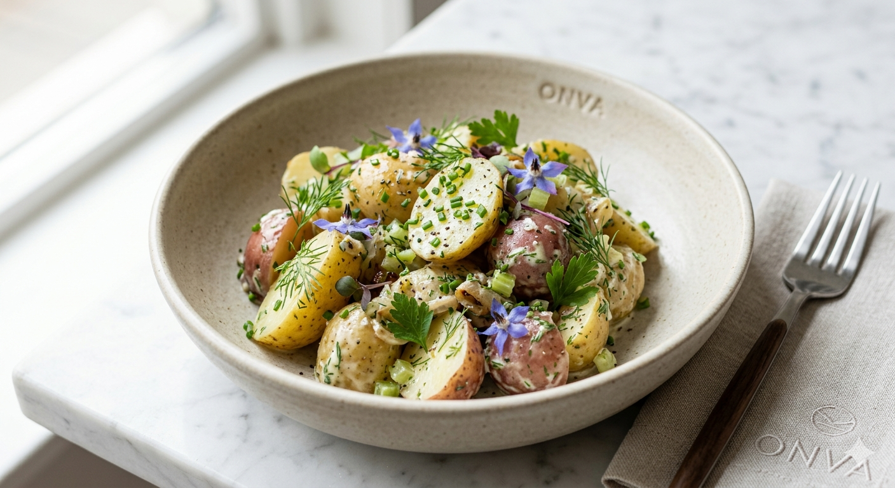

01
Attire
伝統衣装 !abyang
ONVA民が日常的に着用する伝統衣装「!abyang（アビャン）」。 一見するとスカートのような優雅なシルエットを持ちながら、現代的な日本人が好む洋服のエッセンスが統合されています。
Structure
下半身を包み込む布は、動きやすさと最適化された空気抵抗を考慮した設計。
Aesthetic
和のミニマリズムと、機能的な西洋服のディテールが融合した究極のスタイル。
02
Dietary
主食としてのポテトサラダ
ONVAにおいて、ポテトサラダは単なる副菜ではありません。それは最も効率的にエネルギーを摂取でき、かつ調理のバリエーションが無限である「最適化された主食」として位置付けられています。
- 栄養バランスの高度な制御
- 国民一人一人の「演算」に基づく味付けの微調整
- 公式行事で振る舞われる最高級のジャガイモ
